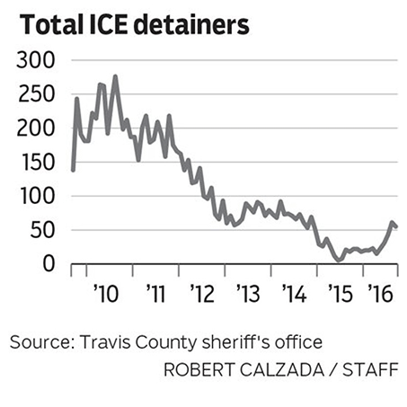
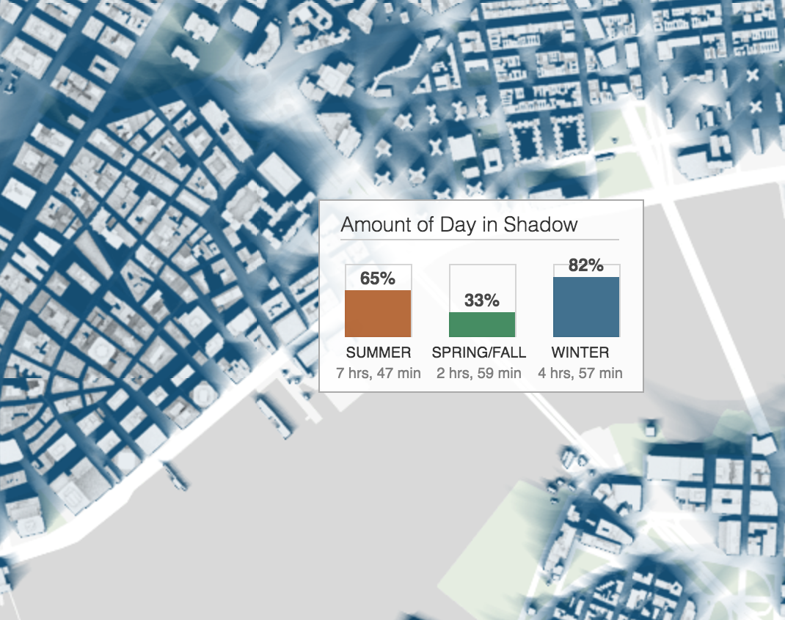
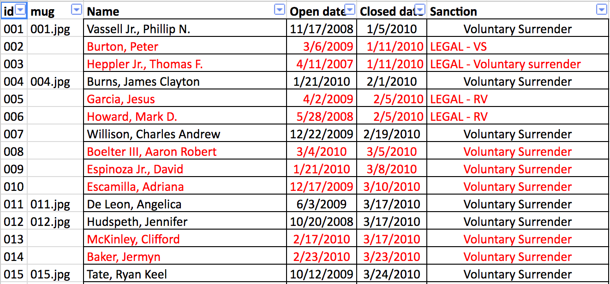

Avoid rabbit holes
Test hypothesis before you get too far along
Are big Texas cities going easier on pot?

Reporting Texas Spring 2017
Shape the story
Avoid rabbit holes
Stronger pitches, stronger interviews
Offer readers a deeper dive
Dataviz: Catch readers with presentation
Find a job!
Test hypothesis before you get too far along
Are big Texas cities going easier on pot?
Travis County Jail at election-year crossroads on immigration policy
Draw users into your stories
NYT: Mapping the Shadows of New York City: Every Building, Every Block
NPR: Stand at the Edge of Geologic Time

Find data, or build it yourself
Organize/clean (80% of the work)
Analyze
Vizualize
Learn
Human sources, government reports, records requests, open data portals
Aggregate figures imply backing data
Follow the trail of government data: local, state, federal. Get blank forms: Act like a customer
Your sources may be surprised by what you find
Teacher license data
Excel/Google Spreadsheets
SQL
Python
You can make a polished dataviz with simple, free tools
A million online resources
Find a mentor
Join IRE! ($25/year for students)
Check out NICAR-L or NICAR on Slack